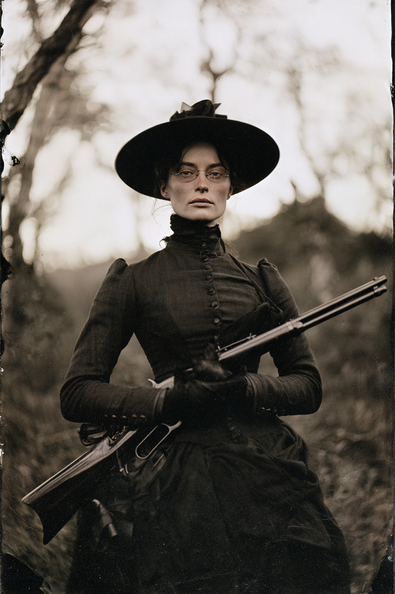

Archetyp: HARROWED (Gepeinigte)
Sie haben in Bitter Creek die Falsche gehängt, und etwas im Boden war mit dem Urteil nicht einverstanden.
| Agility | d8 | 2 |
| Smarts | d6 | 1 |
| Spirit | d6 | 1 |
| Strength | d4 | 0 |
| Vigor | d6 | 1 |
| Skill | Attr. | Die | Pts. |
|---|---|---|---|
| Survival | Sma | d8 | 4 |
| Shooting | Agi | d8 | 3 |
| Stealth | Agi | d8 | 2 |
| Notice | Sma | d6 | 1 |
| Athletics | Agi | d6 | 1 |
| Fighting | Agi | d4 | 1 |
Hintergrund. Pru war Trail-Scout für einen Vermessungstrupp, der eine Nebenstrecke nach Norden aus Kansas trieb — diejenige, die einen Tag vorausritt, das Wasser las und die Pässe fand. Im Frühjahr ’82 holte ein Bürgerwehr-Komitee aus Bitter Creek sie vom Pferd wegen eines Lohnraubs, mit dem sie nichts zu tun hatte, und sieben Männer hängten sie in weniger als einer Stunde an eine Pappel, weil der wahre Dieb einen Bruder im Komitee hatte. Sie hing zwei Tage, dann schnitten sie sie ab und verscharrten sie in einem flachen Graben außerhalb des Zauns. In der dritten Nacht grub sie sich mit bloßen Händen aus und ging los. Sie kam zurück wegen einer Liste — sieben Namen, zwei durchgestrichen.
Der Manitu — „Richter Alder“. Er knurrt nicht. Er ist ausnehmend höflich und besteht auf dem Titel. Zu Lebzeiten war er Bezirksrichter irgendwo im Osten, hängte einundvierzig Männer und genoss jeden einzelnen, und er hat den ganzen Gerichtssaal mit in Prus Schädel gebracht. Er nennt sie „Miss Mabry“. Er spricht im flachen, geduldigen Tonfall eines Protokollführers, meist gerade dann, wenn sie still wird — „Antrag stattgegeben. Das Gericht vermerkt, dass der Angeklagte unbewaffnet und die Stunde spät ist.“ Wenn sie jemanden von der Liste tötet, gratuliert er ihr aufrichtig und warm und trägt den Tod in ein Register ein, dessen Kratzen sie hören kann. Sein Ziel ist nicht Chaos, sondern Verfahren: er will, dass sie weiter Urteile spricht, denn jede Hinrichtung muss sie sich hinterher selbst rechtfertigen — und die Rechtfertigungen sind das, was er in Wahrheit frisst. Er hat mehr als einmal angeboten, „das Register zu erweitern“; er hat Meinungen über zwei Mitglieder der Posse. Er hat sie noch nie belogen, und das ist das Schlimmste daran.
Build. Geschicklichkeit W8, Verstand W6, Geist W6, Stärke W4, Konstitution W6 · Parade 4, Robustheit 7 (5 +2 Untot), Beherrschung 6 Überleben W8, Schießen W8, Heimlichkeit W8, Bemerken W6, Athletik W6, Kämpfen W4 Talente: Harrowed (Gepeinigter), Cat Eyes (Katzenaugen — gratis beim Zurückkehren; ignoriert alle Dunkelheitsabzüge), Woodsman (Naturbursche), Alertness (Aufmerksam) Handicaps: Secret (Geheimnis) — Major: niemand in der Posse weiß, dass sie tot ist · Vengeful — Minor: fünf Namen übrig · Habit (Angewohnheit) — Minor: ein Liter Roggenwhiskey täglich, in eine Kehle geschüttet, die nicht betrunken werden kann — die Konservierungsregel (S. 59) ist der einzige Grund, warum sie nicht nach Grab riecht. Die Posse hält sie für eine funktionierende Trinkerin. Sie lässt sie. Ausrüstung: Winchester-Karabiner mit gekürztem Schaft, Bowiemesser, Nadel und gewachster Faden in Ölzeug (das Nähzeug ist die Heilungsvoraussetzung — sie näht sich im Dunkeln selbst zu), rauchglasgetönte Brille, und ein blinder, tauber alter Maulesel namens Bishop — sie kann kein Pferd halten (−2 auf Reiten und jeden Umgang mit Tieren), also kaufte sie ein Tier, das sie weder sehen noch hören kann. Meistens geht sie zu Fuß. Das Aussehen: blasse, teigige Haut unter breitem Hut und langen Ärmeln. Ein hoher, geschlossener Kragen bei jedem Wetter — darunter die Todeswunde, eine schwarzviolette Strickfurche rundherum, mit dem Knotenmal unter dem linken Ohr. Ihre Stimme ist ruiniert und tief; der Strick hat etwas zerdrückt. Ihr Kopf sitzt leicht falsch, und sie kann nicht scharf nach oben blicken.
Aufhänger. Der dritte Name auf ihrer Liste, ein Deputy namens Elias Cobb, ist seit über einem Jahr tot — und Pru hat ihn nicht getötet. Irgendjemand oder irgendetwas arbeitet ihre Liste ab, ihr voraus, und gründlicher, als sie es täte. Richter Alder behauptet, nichts davon zu wissen, und klingt entzückt. Schlimmer: Pru fehlen zwei ganze Nächte der letzten sechs Monate — und sie hat den Teufel nie entfesselt, was bedeutet, dass der Manitu ohne jeden Tabellenwurf gefahren ist. Das sollte nicht möglich sein.
Warum es Spaß macht. Du bist die nützlichste Person der Posse — die, die das Wasser findet, den Hinterhalt sieht und unversehrt durchs Dunkel geht — während jede einzelne Szene ein leises Pokerspiel um deinen zugeknöpften Kragen ist. Und der Horror ist kein Monster in deinem Kopf, sondern ein höflicher alter Herr, der dir zustimmt, exzellent Buch führt und sich nie darin irrt, wozu du tatsächlich bereit bist.
Regelgrundlage: Regelnotizen · Archetyp-Notizen